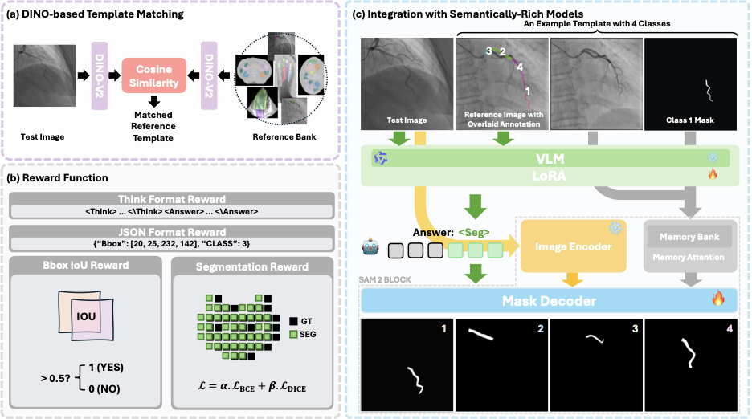
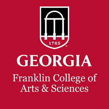
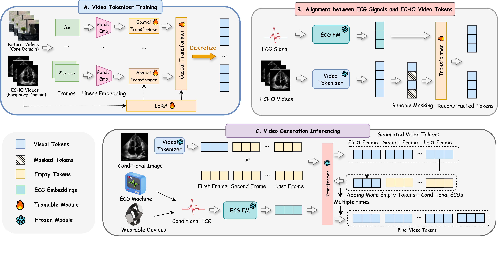
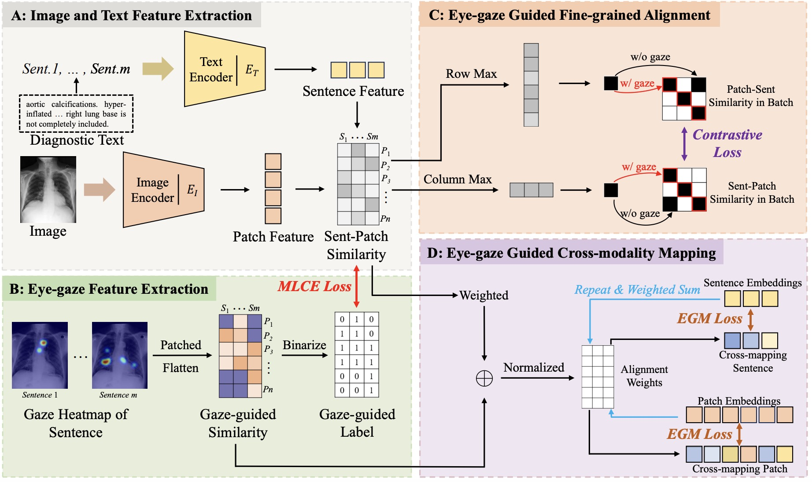
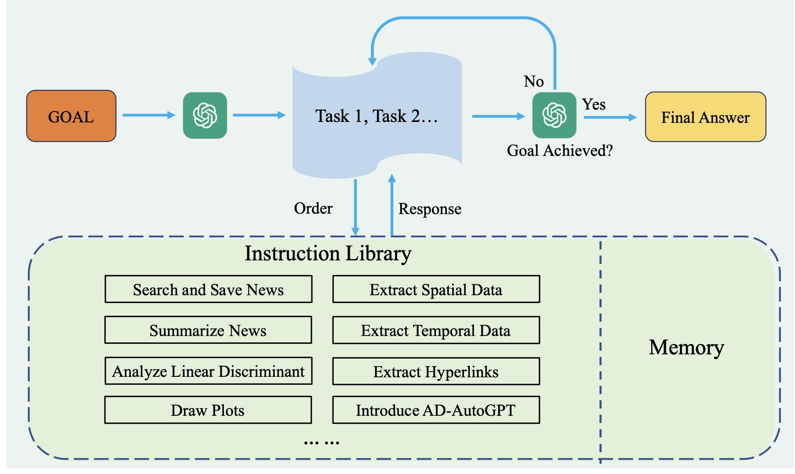

Ph.D. Candidate, University of Georgia · Data Scientist Intern, CAMCA, Harvard Medical School
I am a fourth-year Ph.D. candidate at the University of Georgia, advised by Prof. Tianming Liu. I earned my B.S. in Information Engineering from the Chien-Shiung Wu College at Southeast University, and my M.S. in Computer Science at Southeast University, where I worked with Prof. Hanchuan Peng on computational neuroscience.
My research sits at the intersection of AGI and computational neuroscience, with the goal of bridging machine intelligence and the human brain through multimodality. Recently I focus on Vision-Language Models (VLMs), World Models, and Eye-Gaze–guided learning, with strong interests in AI4Med and AI4Sci. I am currently a remote data scientist intern at CAMCA, Harvard Medical School.
My work spans:
* Equal contribution.

RAU: Reference-based Anatomical Understanding with Vision Language Models
(ECCV 2026) European Conference on Computer Vision, 2026.

MedQuA: A NISQ-Aware Quantum Adapter for Medical Vision-Language Models
(ISBI 2026, Oral) IEEE International Symposium on Biomedical Imaging, 2026.



Outside of research, I enjoy playing basketball and cooking. I also have an adorable cat named Rainbow.
{kind=link}